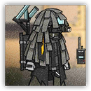
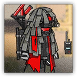

游击队传令兵 Sarkaz Sentinel
近战 物理；普通 游击队
|  |
爱国者部队的重要的通信中枢。在战场上，爱国者的游击队战士们使用特殊的语言沟通，加强协同作战。而传令兵们通过传达战术命令提升所有友方单位的攻击力与防御力。 |
游击队传令兵丨Sarkaz Sentinel
中型类人（任意），混乱中立
| AC 13 | 先攻 +4（14） |
| HP 75（10d8+30） | |
| 速度 30 尺 | |
| 调整 | 豁免 | 调整 | 豁免 | 调整 | 豁免 | |||||||||
|---|---|---|---|---|---|---|---|---|---|---|---|---|---|---|
| 力量 | 11 | +0 | +0 | 敏捷 | 15 | +2 | +4 | 体质 | 16 | +3 | +5 | |||
| 智力 | 12 | +1 | +1 | 感知 | 16 | +3 | +5 | 魅力 | 11 | +0 | +0 |
| 技能 调查+2，察觉+6，洞悉+4，游说+3 |
| 装备 布甲，通讯仪 |
| 感官 黑暗视觉60尺，被动察觉16 |
| 语言 通用语，乌萨斯语，萨卡兹语 |
| CR 2（XP 450；PB +2） |
特质 Traits
魔法抗性 Magic Resistence。传令兵为抵抗法术和其它魔法效应而作的豁免检定具有优势。
指令传递 Instruction Delivery。传令兵未失能时，其120尺内所有可以听见其声音的盟友，在攻击检定上具有+1d4加值。若生物受于多个此效应，其可以掷多次d4并选择最高的那枚应用于其攻击检定上。
动作 Actions
猛踹 Kick。近战攻击检定：+6（若持有临时生命则具有优势），触及5尺。命中：7（1d8+3）钝击伤害。
附赠动作 Bonus Actions
协同指令 Coordination Instructions（2/日）。传令兵选择自己以及120尺内每个可以听见其声音的盟友，为所有目标各添加10点临时生命值。
游击队传令兵组长 Sarkaz Sentinel Leader
近战 物理；普通 游击队
|  |
爱国者部队的重要的通信中枢。传令兵组长拥有更强的单兵作战能力。传令兵组长在场时会强化所有友方单位的攻击力与防御力，并且能很好地保护自己。 |
游击队传令兵组长丨Sarkaz Sentinel Leader
中型类人（任意），混乱中立
| AC 13 | 先攻 +7（17） |
| HP 105（14d8+42） | |
| 速度 30 尺 | |
| 调整 | 豁免 | 调整 | 豁免 | 调整 | 豁免 | |||||||||
|---|---|---|---|---|---|---|---|---|---|---|---|---|---|---|
| 力量 | 12 | +1 | +1 | 敏捷 | 15 | +3 | +5 | 体质 | 17 | +3 | +5 | |||
| 智力 | 15 | +2 | +2 | 感知 | 18 | +4 | +8 | 魅力 | 11 | +0 | +0 |
| 技能 调查+2，察觉+8，洞悉+6，游说+4 |
| 装备 布甲，通讯仪 |
| 感官 黑暗视觉60尺，被动察觉18 |
| 语言 通用语，乌萨斯语，萨卡兹语 |
| CR 4（XP 1,100；PB +2） |
特质 Traits
魔法抗性 Magic Resistence。传令兵为抵抗法术和其它魔法效应而作的豁免检定具有优势。
指令传递 Instruction Delivery。传令兵未失能时，其120尺内所有可以听见其声音的盟友，在攻击检定上具有+1d4加值。若生物受于多个此效应，其可以掷多次d4并选择最高的那枚应用于其攻击检定上。
动作 Actions
多重攻击 Multiattack。传令兵发动两次猛踹攻击。
猛踹 Kick。近战攻击检定：+5（若持有临时生命则具有优势），触及5尺。命中：7（1d8+3）钝击伤害。
附赠动作 Bonus Actions
协同指令 Coordination Instructions（2/日）。传令兵选择自己以及120尺内每个可以听见其声音的盟友，为所有目标各添加20点临时生命值。